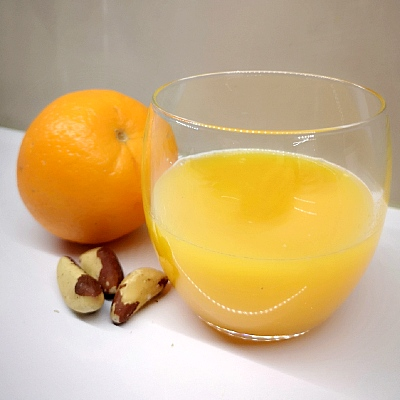
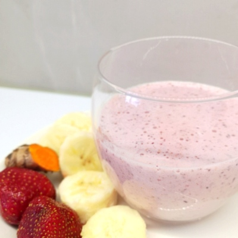
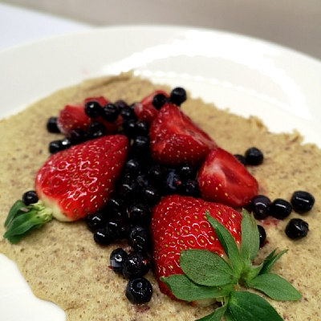
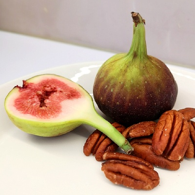
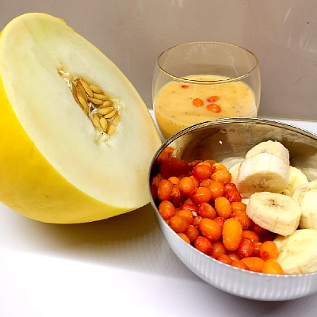
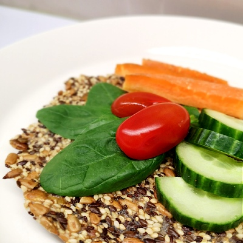

Välipalat

| Appelsiinia ja pähkinöitä |
- cashew-pähkinöitä tai
- 3-4 parapähkinää
- appelsiinia/appelsiinin mehua

- 1.5 dl mantelimaitoa
- mansikkaa
- 1/2 banaani
- 1 rkl proteiinijauhetta
- (pala kurkuman juurta)
- Suosi sokeroimattomia marjoja.

- 2 munaa
- 2 banaania
- 2 rkl kaurahiutaleita
- suolaa
- vanilja-aromia/sokeria
- Soseuta sauvasekottimella ja paista uunissa 200 asteessa noin 15-20 minuuttia. Jaa annos kahteen syömiskertaan. Nauti marjojen kera.
Syö säännöllisin väliajoin 5 kertaa päivässä
10 h aikaikkunassa eli 14 h paastoa ja 10 h sisällä kaikki syöminen.

- kourallinen pähkinöitä
- 4-6 kuivattua viikunaa tai
- 2 tuoretta viikunaa
- kahvi/tee
- Hyvän rasvan lähteinä toimivat esim. cashewpähkinät, pekaanipähkinät tai saksanpähkinät. Huomioi, että parapähkinöitä suositellaan syötäväksi max 4-5 kpl päivässä niiden runsaan seleenipitoisuuden vuoksi.

- 1 dl mantelimaitoa
- 1/2 tai 1/4 hunajameloni
- 1 dl tyrnimarjoja
- 1 pilkottu (pakastettu) banaani
- Soseuta ainekset sauvasekottimella.
Alkuperäinen lähde: Karita Tykkä - Hyvää huomenta

- chia-siemennäkkileipä
- (pikkulautasen kokoinen pala)
- esim. porkkanaa, tomaattia
- kukkakaalia, kurkkua
- Voit ostaa valmiin siemenpussin kaupasta ja paistaa ja maustaa näkkärisi oman makusi mukaan. Suosi juureksissa ja vihanneksissa ns. sateenkaariperiaatetta eli nauti ihanat luonnon antimet mahdollisimman monipuolisesti kaikissa eri väreissä.